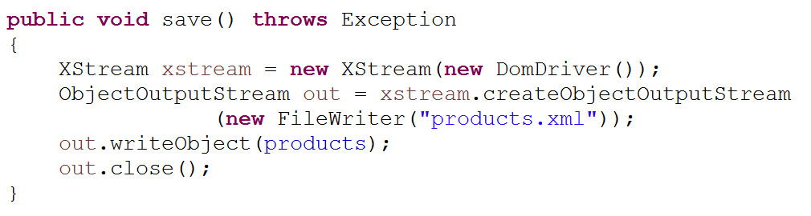

Objectives
In this lab, you will implement persistence into ShopV4.0. You will also apply your persistence knowledge to another domain i.e. the DVD library you are currently working on.
Developing Shop V4.0
In this practical, you will create a new project called ShopV4.0 in Eclipse and refactor the code so that persistence is fully implemented for the prodcuts collection. This will be the menu you will finally end up with:
Starting ShopV4.0
Create a new project called ShopV4.0 and copy the three java files from ShopV3.0 into it.
The solution to the ShopV3.0 exercise is here should you need it.
Adding the XStream component to ShopV4.0
Download the xstream-1.4.8.jar component.
In Eclipse Package Explorer, create a new folder "lib“ (select "File->New->Folder“)
Drag the xstream-1.4.8.jar component into the lib folder (choose the option to copy the file).
Your project structure should now look like this:
Adding the XStream component to the build path
Right click on the xstream-1.4.8.jar file and select: "Build Path->Add to Build Path".
Your project structure should now look like this:
Updating the ShopV3.0 Menu for ShopV4.0
- The menu for ShopV3.0 is:

- Make the following changes in ShopV4.0, MenuController class:
- Also change the switch statement in ShopV4.0, MenuController to reflect these changes:
Store.java - persistence methods
- Add this load() method into ShopV4.0, Store class:
- Add this save() method into ShopV4.0, Store class:

- Import the necessary libraries:
import java.io.FileReader;
import java.io.FileWriter;
import java.io.ObjectInputStream;
import java.io.ObjectOutputStream;
import com.thoughtworks.xstream.XStream;
import com.thoughtworks.xstream.io.xml.DomDriver;- Test the new code. In particular, save some products, exit the app, restart the app and load the products...do your products load successfully?
Menu Driven DVD Specification (Phase 3)
Create a new project in Eclipse, called DVDLibraryV3.0.
Copy the src java code from DVDLibraryV2.0 into it.
You will now extend the code to allow the user to save and load DVDs (note that the solution to DVD version 2 is in the solutions tab, should you need it).
Adding the XStream component
Download the xstream-1.4.8.jar component.
In Eclipse Package Explorer, create a new folder "lib“ (select "File->New->Folder“)
Drag the xstream-1.4.8.jar component into the lib folder (choose the option to copy the file).
Adding the XStream component to the build path
- Right click on the xstream-1.4.8.jar file and select: "Build Path->Add to Build Path".
Updating the Driver class
- The current menu is:
- Make the following changes in the Driver class:
- Also change the switch statement in Driver to reflect these changes:

Library.java - persistence methods
- Add this load() method into the Library class:
- Add this save() method into the Library class:
- Import the necessary libraries:
import java.io.FileReader;
import java.io.FileWriter;
import java.io.ObjectInputStream;
import java.io.ObjectOutputStream;
import com.thoughtworks.xstream.XStream;
import com.thoughtworks.xstream.io.xml.DomDriver;- Test the new code. In particular, save some products, exit the app, restart the app and load the products...do your dvds load successfully?
JavaDoc
- Javadoc your solution